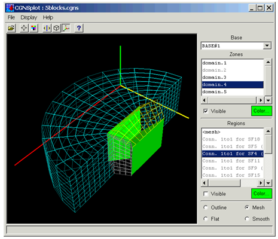
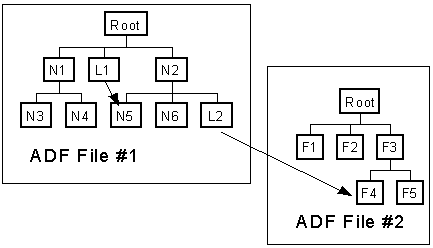
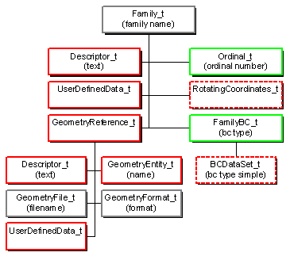
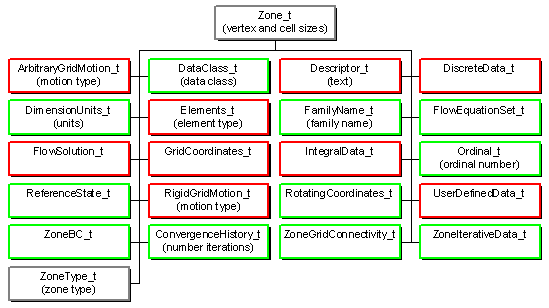
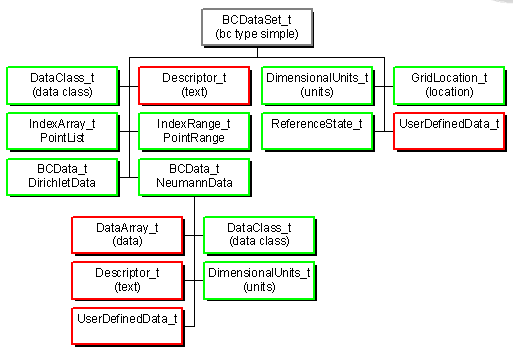
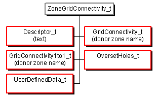
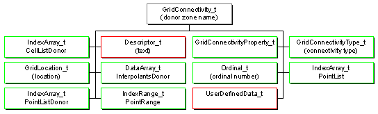
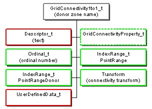
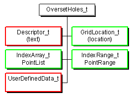
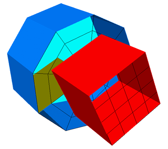

CFD General Notation System
http://www.cgns.org
Bruce Wedan
ANSYS/ICEM CFD
Presentation Overview
- What is CGNS ?
- History of CGNS
- CGNS Steering Committee
- ISO-STEP Standard
- HDF5 Interface
- User Base
- CGNS Main Features
- Current Release (Version 2.3)
- Extensions (Version 2.4 beta)
- CGNS Tools
- Detailed Node Descriptions
- Example
- Conclusions
What is CGNS?
- CFD General Notation System
- Principal target is the data normally associated with compressible
viscous flow (i.e. Navier-Stokes)
- Applicable to computational field physics in general with
augmentation of the data definitions and storage conventions
- Objectives
- Provide a general, portable and extensible standard for the storing
and retrieval of CFD analysis data
- Offer seamless communication of CFD analysis data between
sites, applications and system architectures
- Eliminate the overhead costs due to file translation and
multiplicity of data sets in various formats
- Provide free, open software - GNU Lesser General Public License
- Advanced Data Format (ADF)
- Software that performs the I/O operations
- Directed graph based on a single data structure (the ADF node)
- Defines how data is organized in the storage media.
- Standard Interface Data Structures (SIDS)
- Collection of conventions and definitions that defines the
intellectual content of CFD-related data.
- Independent of the physical file format
- SIDS to ADF Mapping
- Defines how the SIDS is represented in ADF
- CGNS MidLevel Library (MLL)
- High level Application Programming Interface (API) which
conforms closely to the SIDS
- Built on top of ADF and does not perform any direct I/O operation
History of CGNS
- 1994-1995:
- Series of meetings between Boeing and NASA addressing means
of improving technology transfer from NASA to Industry: The
main impediment to technology transfer is the disparity of file
formats.
- 1995-1998:
- Development of the CGNS System (SIDS, ADF) at Boeing
Seattle, under NASA Contract with participation from:
- Boeing Commercial Aircraft Group, Seattle
- NASA Ames/Langley/Lewis Research Centers
- Boeing St-Louis (former McDonnell Douglas Corporation)
- Arnold Engineering Development Center, for the NPARC Alliance
- Wright-Patterson Air Force Base
- ICEM CFD Engineering Corporation
- 1997-1998:
- Development of the CGNS Midlevel Library.
- Institution of the CGNS website (http://www.cgns.org)
- first release of the CGNS software and documentation.
- 1999-2001:
- CGNS Steering Committee created as a subcommittee of the
AIAA CFD Committee on Standards
- Version 2.0 of CGNS library released
- Added moving grids and time-dependent data
- ISO-STEP standardization process undertaken by Boeing
- CGNStalk mailing list created at NASA Glenn
- 2002:
- CGNS becomes a AIAA Recommended Practice
- Version 2.1 of CGNS library released
- Added support for user-defined arrays, chemistry and links
- 2003:
- Source code moved under CVS at SourceForge
(http://sourceforge.net/projects/cgns/)
- Version 2.2 of CGNS library released
- Added axisymmetry, rotating coordinates, connectivity and
boundary condition properties
- 2004:
- HDF5 interface to CGNS released
- Version 2.3 (current stable version) released
- I/O times speed up by an order of magnitude
CGNS Steering Committee
- Public forum made up of international representatives
from government, industry and academia
- Responsibilities
- Maintain the software, documentation and CGNS web site
- Ensure a free distribution of the software and documentation
- Promote the acceptance of the CGNS standard
- Organization
- Meets at a minimum of once a year
- Represented by an elected ChairPerson
- currently Chris Rumsey of NASA Langley
- Governs by consensus
- Welcomes participation of all parties, members or not
- Membership - 20 organizations
- NASA Ames
- NASA Langley
- NASA Glenn
- Boeing Commercial
- Boeing - Rocketdyne
- Boeing Integrated Defense Systems
- Pratt & Whitney
- ICEM CFD Engineering
- Fluent, Inc.
- Rolls-Royce Allison
- US Air Force / AEDC
- CD ADAPCO
- Intelligent Light
- Pointwise
- Aerospatiale Matra Airbus
- NUMECA
- ONERA
- Stanford University
- Utah State University
- ANSYS CFX
ISO-STEP Standard
- AP 237 - Fluid Dynamics
- Top-level standard which defines the data types and structures
used throughout the field of fluid dynamics
- Need to extend ISO-STEP for binary data (currently ASCII only)
- Part 110 - Computational Fluid Dynamics
- Defines the data types and structures unique to CFD
- Part 52 - Mesh-based Topology
- Defines structured and unstructured grids including topology and
element connectivity
- Part 53 - Numerical Analysis
- Defines links to product data management structures and
configuration control for numerical analysis
- Approval process
- A proposal must past 6 stages or "gates" to become a standard.
- Passage through each "gate" requires a specified number of
votes from the 17 P-Member countries. There are CGNS users in
each of these countries.
- Proposals are cancelled after 2 years if progress is not shown
- AP 237 is at "gate" 3 (Committee Draft)
- Parts 110, 52, and 53 are at "gate" 4 (Draft International Std)
- Current status
- Standardization effort is stalled due to lack of funds.
- ISO-STEP has decided to merge AP 237 with AP 209 (finite
element analysis) because there is a high degree of common
content. Effort is being lead by Keith Hunten of Lockheed
Martin
HDF5 Interface
- Implementation
- Fully implemented at the ADF level - no change to MLL
- Advantages
- Used in many applications
- Parallel I/O using MPI
- Faster access through linked files
- Disadvantages
- File sizes are 2 to 3 times larger
- I/O times are generally 2 to 3 times slower, but may be up to a
order of magnitude for a large number of nodes
- Current Status
- HDF5 Task Force set up to further evaluate implementation
- Added as option to CGNS with conversion routines
User Base
- Registered Users
- 591 users from more than 25 countries
- CGNStalk (as of May 2003)
- 153 participants from 20 different countries and at least 63
different organizations
- SourceForge (last 2 years)
- Average of 20 page views and 7.5 downloads per day
- Known implementations
- 13 commercial, 9 government, 5 industry, 3 academia
CGNS Main Features
- Hierarchical data structure: quickly traversed and sorted, no need to
process irrelevant data
- Complete and explicit problem description
- Standardized naming conventions
- Unlimited internal documentation, and application specific data
- Layered so that much of the data structures are optional
- ADF database: universal and self describing
- Based on a single data structure called an ADF node
- The data may encompass several files through the use of links
- Portable ANSI C software, with complete Fortran and C interfaces
- Files stored in compact C binary format
- Complete and architecture independent API
Current Release (Version 2.3)
- Grid coordinates and elements
- 1D, 2D and 3D support (physical and cell dimensions)
- Any number of structured and/or unstructured zones
- Cartesian, cylindrical and spherical coordinates systems
- Linear and higher-order elements (22 predefined element types)
- 2D axisymmetry
- Grid connectivities
- 1-to-1 abutting, mismatched abutting, and overset (chimera)
- Connectivity properties (average and periodic interfaces)
- Boundary conditions
- Simple or complex boundary conditions with predefined
identifiers
- Any number of Dirichlet or Neumann conditions may be specified
globally or locally on a boundary condition patch
- Boundary patch normals, area and wall function properties
- Governing flow equations
- General class of flow equations
- Gas, viscosity, thermal conductivity, thermal relaxation,
chemistry, turbulence, and turbulence closure models
- Solutions
- Vertex, cell, face or edge centered with rind (ghost points/cells)
- Any number of solution variables
- Predefined identifiers for solution variables
- Generic discrete data (not typically part of the solution)
- Time-dependent flows
- Time-accurate or non-time-accurate
- Rotating, rigid motion or arbitrary motion grids
- Storage of base and/or zone iterative data
- Physical data
- Data class: dimensional, normalized, or nondimensional
- Data conversion factors
- Dimensional units: mass, length, time, temperature and angle
- Dimensional exponents: powers of base units
- Auxiliary data
- Global and/or local convergence history
- Reference state variables
- Gravity and global integral data
- Arbitrary user-defined data
- Textual data for documentation and annotations
- Families
- Provides a level of indirection to allow mesh to geometry
associations
- Boundary conditions may be applied on families
- Links mesh surfaces to one or more CAD entities
Extensions (Version 2.4 beta)
- Units
- Electric current, amount of a substance, and luminous intensity
added to the base units
- Electromagnetics
- Electric field, magnetic field and electrical conductivity models
added to the governing flow equations
- Voltage, electric and magnetic field strengths, current density,
electrical conductivity, Lorenz force and Joule heating added to
list of solution identifiers
- Families
- Rotating coordinates and complex boundary conditions added to
the family specification
- Boundary conditions
- Allow for specification of boundary condition data at a location
different than that of the patch specification
- User-defined data
- Allows recursive user-defined data
- Family names and point set specification added
- 1-to-1 connectivities
- Periodic and average interface properties added
- Partial read and write
- Partial read and write for grid coordinates, elements and solution
variable added
CGNS Tools
- ADFviewer

- Views and/or edits ADF/CGNS files.
- May create, delete or modify nodes
- Nodes are displayed in a Windows-like collapsible tree
- Additional utilities may be accessed from the menus
- Configurable menus
- Written in Tcl/Tk
- CGNSplot

- Viewer for CGNS files
- Displays zones, element sets, connectivities, and boundary
conditions
- Written in Tcl/Tk with OpenGL
- Runs standalone, or may be called from ADFviewer
- File conversion
- Convert Patran, PLOT3D and Tecplot files to CGNS
- Convert CGNS files to PLOT3D and Tecplot
- CGNS file manipulation
- Data conversion utilities for modifying the solution location
(vertex or cell-center), solution variables (primitive or
conservative), and data class (dimensional or normalized)
- Subset extraction and interpolation
- CGNS bindings
- Tcl/Tk interface to ADF and MLL
- PyCGNS: Python interface to ADF and MLL
- ADFM: in memory representation of ADF trees
- CGNS++: C++ interface to ADF and MLL
- Other utilities
- CGNScheck: checks CGNS files for valid data and
conformance to the SIDS
- ADFlist: lists ADF/CGNS file tree structure and node data
- ADF_Edit: command-line based interactive browser/editor
for ADF/CGNS files
- CGNS_readhist: reads a CGNS file and writes convergence
history to a formatted file.
- FTU (File Transfer Utility): converts to and from
PLOT3D, and has a textbased menu allowing the manipulation of
a CGNS base
- CGNS Viewer: ADF/CGNS file editor/viewer with a GUI using
the GTK+ library
ADF Core

ADF Node Content
- ID: A unique identifier to access a node within a file.
- Name: A character field used to name the node. It must be unique for
a given parent.
- Label: A character field used to described the type of information
contained in the node.
- Data type: A character field specifying the type of data (e.g. real,
complex) associated with the node.
- Number of dimensions: The dimensionality of the data.
- Dimensions: An integer vector containing the number of elements
within each dimension.
- Data: The data associated with the node.
- Number of subnodes: The number of children directly attached to a
node.
- Name of subnodes: The list of children names.
Top Level Structure

DataArray_t Node

Family_t Node

FlowEquationSet_t Node

ReferenceState_t Node

UserDefinedData_t Node

Zone_t Node

Elements_t Node

FlowSolution_t Node

GridCoordinates_t Node

ZoneBC_t Node

BCDataSet_t Node

ZoneGridConnectivity_t Node

GridConnectivity_t Node

GridConnectivity1to1_t Node

OversetHoles_t Node

Example
- Structured cylinder attached to unstructured cube

Example - Code
unlink("example.cgns");
cg_open("example.cgns", MODE_WRITE, &cgfile);
cg_base_write(cgfile, "Mismatched", CellDim, PhyDim, &cgbase);
cg_goto(cgfile, cgbase, "end");
cg_descriptor_write("Descriptor", "Mismatched Grid");
cg_dataclass_write(Dimensional);
cg_units_write(Kilogram, Meter, Second, Kelvin, Radian);
/*----- zone 1 is unstructured cube -----*/
cg_zone_write(cgfile, cgbase, "UnstructuredZone", size, Unstructured, &cgzone);
/* write coordinates */
cg_coord_write(cgfile, cgbase, cgzone, RealSingle, "CoordinateX", xcoord, &cgcoord);
cg_coord_write(cgfile, cgbase, cgzone, RealSingle, "CoordinateY", ycoord, &cgcoord);
cg_coord_write(cgfile, cgbase, cgzone, RealSingle, "CoordinateZ", zcoord, &cgcoord);
/* write elements and faces */
cg_section_write(cgfile, cgbase, cgzone, "Elements", HEXA_8, 1, num_element, 0,
elements, &cgsect);
cg_section_write(cgfile, cgbase, cgzone, "Faces", QUAD_4, num_element+1,
num_element+num_face, 0, faces, &cgsect);
cg_parent_data_write(cgfile, cgbase, cgzone, cgsect, parent);
/* write inflow and wall BCs */
cg_boco_write(cgfile, cgbase, cgzone, "Inlet", BCInflow, ElementRange, 2, range, &cgbc);
cg_boco_write(cgfile, cgbase, cgzone, "Walls", BCWall, PointList, n, pts, &cgbc);
/*----- zone 2 is structured cylinder -----*/
cg_zone_write(cgfile, cgbase, "StructuredZone", size, Structured, &cgzone);
/* write coordinates */
cg_coord_write(cgfile, cgbase, cgzone, RealSingle, "CoordinateR", xcoord, &cgcoord);
cg_coord_write(cgfile, cgbase, cgzone, RealSingle, "CoordinateTheta", ycoord, &cgcoord);
cg_coord_write(cgfile, cgbase, cgzone, RealSingle, "CoordinateZ", zcoord, &cgcoord);
/* write outlet and wall BCs */
cg_boco_write(cgfile, cgbase, cgzone, "Outlet", BCOutflow, PointRange, 2, range, &cgbc);
cg_boco_write(cgfile, cgbase, cgzone, "Walls", BCWall, PointList, n/3, pts, &cgbc);
/* periodic 1to1 connectivity */
cg_1to1_write(cgfile, cgbase, 2, "Periodic", "StructuredZone", range, d_range, transform,
&cgconn);
/*----- zone 1 > zone 2 connectivity -----*/
cg_conn_write(cgfile, cgbase, 1, "Unstructured > Structured", Vertex, Abutting,
PointRange, 2, pts, "StructuredZone", Structured, CellListDonor, Integer, n/3, d_pts,
&cgconn);
cg_goto(cgfile, cgbase, "Zone_t", 1, "ZoneGridConnectivity_t", 1, "GridConnectivity_t",
cgconn, "end");
cg_array_write("InterpolantsDonor", RealSingle, 2, dims, interp);
/*----- zone 2 > zone 1 connectivity similar -----*/
/* close file */
cg_close(cgfile);
Example - Node Tree
ADF MotherNode
+-CGNSLibraryVersion
+-Mismatched
+-Descriptor
+-DataClass
+-DimensionalUnits
+-UnstructuredZone
| +-ZoneType
| +-GridCoordinates
| | +-CoordinateX
| | +-CoordinateY
| | +-CoordinateZ
| +-Elements
| | +-ElementRange
| | +-ElementConnectivity
| +-Faces
| | +-ElementRange
| | +-ElementConnectivity
| | +-ParentData
| +-ZoneBC
| | +-Inlet
| | | +-ElementRange
| | +-Walls
| | +-PointList
| +-ZoneGridConnectivity
| +-Unstructured -> Structured
| +-GridConnectivityType
| +-PointRange
| +-CellListDonor
| +-InterpolantsDonor
+-StructuredZone
+-ZoneType
+-GridCoordinates
| +-CoordinateR
| +-CoordinateTheta
| +-CoordinateZ
+-ZoneGridConnectivity
| +-Periodic
| | +-Transform
| | +-PointRange
| | +-PointRangeDonor
| +-Structured -> Unstructured
| +-GridConnectivityType
| +-PointList
| +-CellListDonor
| +-InterpolantsDonor
+-ZoneBC
+-Outlet
| +-PointRange
+-Walls
+-PointList
Conclusions
- Why should I use CGNS?
- CGNS is a well-established, stable format with worldwide
acceptance, use and support
- Provides seamless communication of data between applications,
sites, and system architectures
- Supported by most commercial visualization and CFD vendors
- Extensible and flexible - easily adapted to other fields of
computational physics through specification in the SIDS
- Backwards compatible with previous versions - forwards
compatible within the major release number
- Allows new software development to focus on functionality and
reliability rather than data I/O, storage and compatibility
- Want more information?